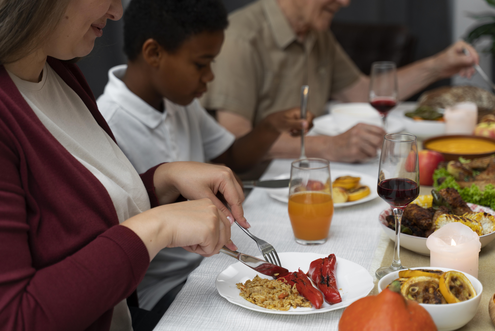
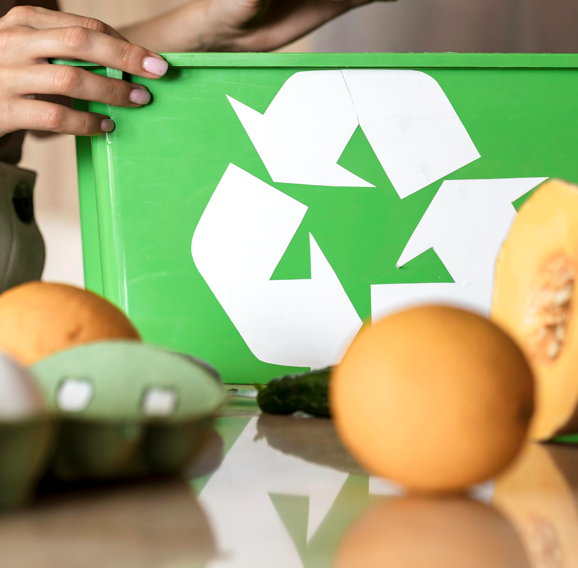
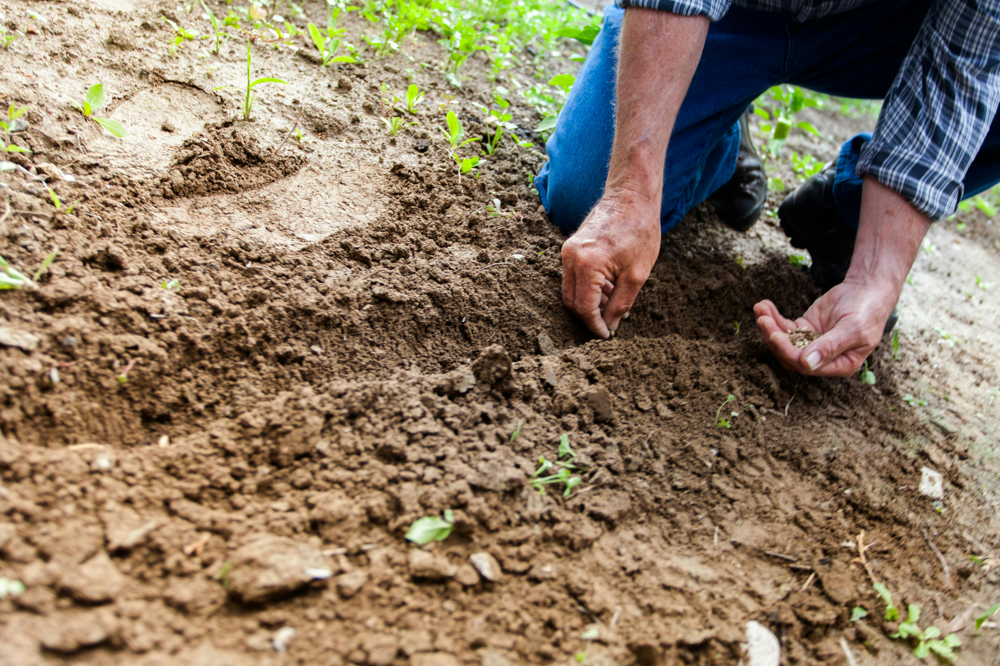
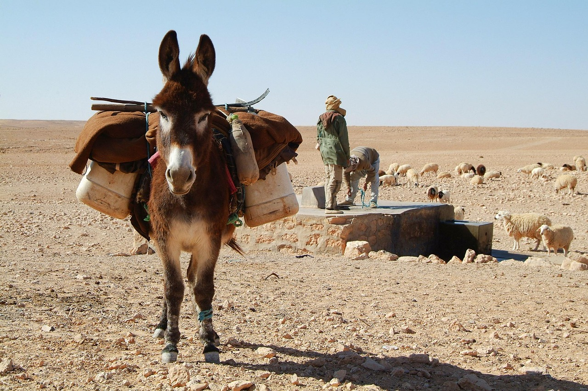

NOTRE MISSION
À Bondy Nord (QPV), O’SURVIE agit pour renforcer le lien social et soutenir les habitants à travers des actions solidaires et conviviales. Votre soutien nous permet de développer encore plus nos initiatives pour les familles, les jeunes et les seniors.
0
Actions actives
et régulières0
Bénévoles mobilisables
selon besoins et projets
0
Bénéficiaires réguliers
en 20250
Personnes soutenues
NOS ACTIONS

O'Partage
→ Voir plusO'Café solidaire
→ Voir plusO'Numérique
→ Voir plusO'Soutien
→ Voir plusO'Visite
→ Voir plus
O'Recup
→ Voir plus
O'Vert demain
→ Voir plus